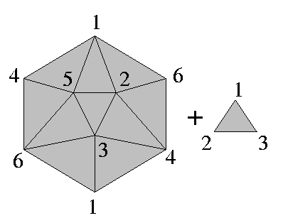

Björner's example of non-extendably shellable 2-polyhedron
Description
This strange example was made by Björner.
This is shellable but not extendably shellable.

Identify the vertices with the same labling.
That is, this example is made from a projective plane and one additional
triangle.
Properties
The smallest example which is shellable but not extendably was
found by Moriyama and Takeuchi, with 6 vertices and 9 facets.
That this Björner's example has non-zero homology and that
it has no boundary should be remarked.